Fuzzy Animals!
Select your favorite animal
Alpacas
South American member of the camel family, Camelidae (order Artiodactyla), that is closely related to the llama, guanaco, and vicuña, which are known collectively as lamoids. The alpaca and the llama were both apparently domesticated several thousand years ago by the Indians of the Andes Mountains of South America. The other two lamoid species, the guanaco and vicuña, exist basically in the wild state.
Like other lamoids, alpacas are slender-bodied animals with a long neck and legs, a short tail, a small head, and large, pointed ears. Alpacas are readily distinguished from llamas by their smaller size; they stand approximately 90 cm (35 inches) high at the shoulder and weigh 55 to 65 kg (121 to 143 pounds). The alpaca also differs from the llama in having a rounded, rather than squarish, body and in its habit of pressing its tail close to the body rather than holding it erect, as does the llama. The alpaca’s shaggy coat varies in colour from the usual black or brown through lighter shades of gray and tan to pale yellow and, occasionally, white.
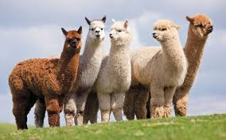 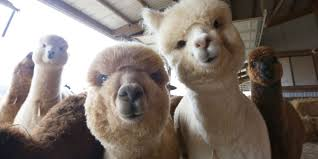 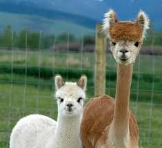 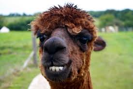Pandas
Also called panda bear, bearlike mammal inhabiting bamboo forests in the mountains of central China. Its striking coat of black and white, combined with a bulky body and round face, gives it a captivating appearance that has endeared it to people worldwide. According to the IUCN Red List of Threatened Species, fewer than 1,900 pandas are thought to remain in the wild.
Large males may attain 1.8 metres (6 feet) in length and weigh more than 100 kg (220 pounds); females are usually smaller. Round black ears and black eye patches stand out against a white face and neck. Black limbs, tail, legs, and shoulders contrast with the white torso. The rear paws point inward, which gives pandas a waddling gait. Pandas can easily stand on their hind legs and are commonly observed somersaulting, rolling, and dust-bathing. Although somewhat awkward as climbers, pandas readily ascend trees and, on the basis of their resemblance to bears, are probably capable of swimming. An unusual anatomic characteristic is an enlarged wrist bone that functions somewhat like a thumb, enabling pandas to handle food with considerable dexterity.
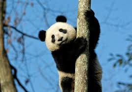 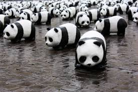 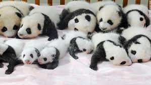 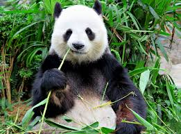Koalas
also called koala bear, tree-dwelling marsupial of coastal eastern Australia classified in the family Phascolarctidae (suborder Vombatiformes). The koala is about 60 to 85 cm (24 to 33 inches) long and weighs up to 14 kg (31 pounds) in the southern part of its range (Victoria) but only about half that in subtropical Queensland to the north. Virtually tailless, the body is stout and gray, with a pale yellow or cream-coloured chest and mottling on the rump. The broad face has a wide, rounded, leathery nose, small yellow eyes, and big fluffy ears. The feet are strong and clawed; the two inner digits of the front feet and the innermost digit of the hind feet are opposable for grasping. Owing to the animal’s superficial resemblance to a small bear, the koala is sometimes called, albeit erroneously, the koala bear.
The koala feeds very selectively on the leaves of certain eucalyptus trees. Generally solitary, individuals move within a home range of more than a dozen trees, one of which is favoured over the others. If koalas become too numerous in a restricted area, they defoliate preferred food trees and, unable to subsist on even closely related species, decline rapidly. To aid in digesting as much as 1.3 kg (3 pounds) of leaves daily, the koala has an intestinal pouch (cecum) about 2 metres (7 feet) long, where symbiotic bacteria degrade the tannins and other toxic and complex substances abundant in eucalyptus. This diet is relatively poor in nutrients and provides the koala little spare energy, so the animal spends long hours simply sitting or sleeping in tree forks, exposed to the elements but insulated by thick fur. Although placid most of the time, koalas produce loud, hollow grunts.
 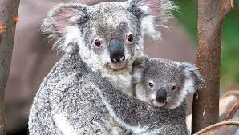
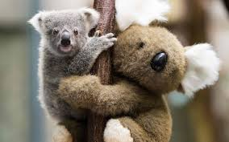
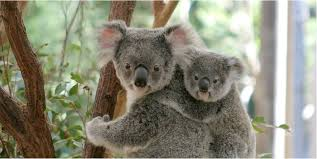
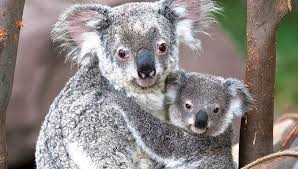
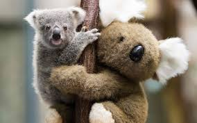
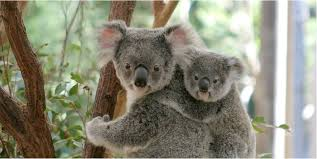